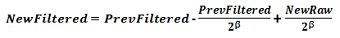

The count filter provides a blocking mechanism for AC noise. It is a first-order IIR low-pass filter with 7 adjustable steps to control the filter strength. It may be enabled or disabled by toggling the Count_Filter_Enable parameter. The equation below defines the output of the filter. The previous filtered count value is combined with each new raw values according to this equation.

If the count filter is enabled, its strength is controlled by the Count_Filter_Beta parameter. As the count filter beta value is increased, the attenuation of AC signals increases- but at the expense of DC response time. The two examples below illustrate this concept. A self-capacitance button in the presence of heavy AC noise is shown. The raw signal and the filtered signal are superimposed to show the effect of the filter. Notice how the DC component (a touch) may be passed, while the AC component is attenuated.
The second example below shows the use of a stronger count filter than the previous example. Note that while the noise attenuation is improved, there is now an increase in the response time to the desired DC signal.
Implementation Notes
A good starting point for implementing a count filter is a beta of 1. This is the weakest filter
available, outside of full off. If heavy AC noise is present, increasing the beta may help stabilize
the measurements. Note that increasing the beta will increase the response time of the system. It
is also important to note that the filter value used is somewhat dependent upon the system scan rate.
For example, a count filter beta of 1 at 50 Hz has similar AC-blocking characteristics as a count filter
beta of 2 at 100 Hz, if the noise frequency is constant.
Range of Valid Values for the Count Filter Beta Parameter
The count filter beta may be set from 0 to 7, with zero being equivalent to off.
Affected Software Parameters
The Count_Filter_Enable parameter corresponds to the bCountFilterEnable member of the
tSensor type in the CapTIvate Touch Library.
The Count_Filter_Beta parameter corresponds to the ui8CntBeta member of the
tSensor type in the CapTIvate Touch Library.